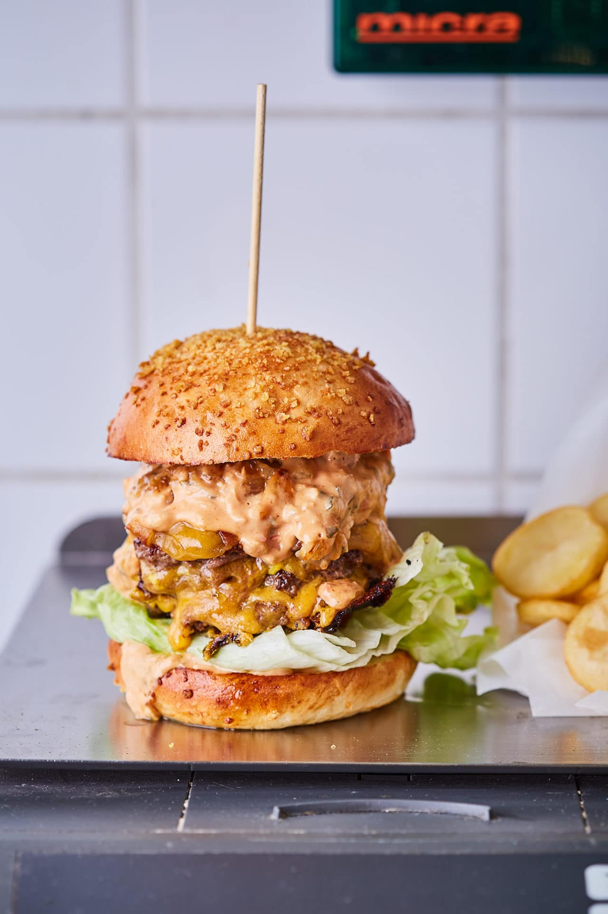

A smashed, azaz szétnyomott burger!

Ez az a technológia, amikor a húst egy magas hőmérsékletű serpenyőben szétnyomva sütjük, így egy totál más
ízprofil jön létre.
Hozzávalók 4 főre
- 1 kg darált marhahús
- 1 ek olaj
- 50 g mustár
- só, bors
- 12 szelet cheddar sajt
- 4 db hamburgerzsömle
- 1 fej jégsaláta
A szószhoz
- 100 g majonéz
- 50 g angol mustár
- 50 g ketchup
- 50 g savanyú uborka
- 1 ek savanyúuborka-lé
- 1 mk Cayenne-bors
Elkészítés
- A szósz összetevőit egy aprítóban pulzálva összekeverjük.
- A darált húsból 80 grammos golyókat formázunk. Egy nagyobb serpenyőt néhány percig a legmagasabb lángon
hevítünk,
majd az olajon, 1-1 kiskanál mustárt rakva alájuk, beleteszünk 3 golyót. Kilapítjuk, amennyire csak
tudjuk,
lehetőség szerint egyszerre, akár egy másik serpenyővel (vigyázzunk, hogy ahhoz ne ragadjon hozzá,
érdemes
sütőpapírt használni a húsok fölé). 20-25 másodperc után levesszük a lapítóeszközt, sózzuk, borsozzuk,
majd
további 60-80 másodpercig sütjük a húst.
- Ha kész, mindhárom húst megfordítjuk, és az előzőhöz hasonlóan kilapítjuk (most már mustár nélkül). Az
első
húsra teszünk egy szelet cheddar sajtot, erre kerül a második hús, még egy szelet cheddar, majd a
harmadik hús, és
újabb cheddar.
- További 60-90 másodperc alatt így sütjük készre. Ugyanígy sütjük meg a többi húsgolyót is.
- A félbevágott zsemle mindkét oldalát megpirítjuk, megkenjük a szósszal, az aljára pedig megroppantott
jégsalátaleveleket teszünk. Erre helyezzük a sajttal összeragasztott tripla húspogácsát, és készen is
van a
tripla smashed burgerünk!
Tipp: ha szeretnénk a burgert még magasabb szintre emelni, felkarikázott vöröshagymát süssünk
ki a hús zsírján,
és azt is tegyük a burgerbe. Ennél amcsibb már nem is lehetne!
Home